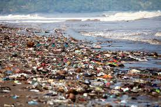
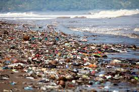

CONTENEDOR ROJO
En este contenedor se depositan:
- DESECHOS HOSPITALARIOS
- BACTERIAS
- PILAS
- INSECTICIDAS
- AEROSOLES
- PRODUCTOS TECNOLÓGICOS
ADVERTENCIA:
- Este contenedor es especial para desechos peligrosos no tirar algun otro material para evitar riesgos
No arruinemos la tierra es difícil encontrar un buen planeta.
Y por último recuerda poner en práctica las 3 r, que son: Reducir, Reutilizar y Reciclar.
Nuestro planeta es el único hogar que tenemos, tratemos de cuidarle un poco más antes de terminar todos los recursos que nos quedan de él.  
  Tratemos de evitar que esto empeore.
Tratemos de evitar que esto empeore.
¿Qué se hace con los desechos peligrosos?
- Minimizar su cuantía y peligrosidad.
- Recuperar las materias que se puedan para su reintroducción y reutilización.
- Confinar en depósitos de seguridad o incinerar aquellos residuos que no se puedan recuperar.
- Reciclar para obtener materias primas de otros procesos.
- Aprovechar y adecuar los residuos peligrosos para su valorización energética.
¿Qué impacto ambiental causaría reciclar los desechos tóxicos de la forma correcta?
Si son almacenados dentro de su casa, causarían vapores peligrosos e incendios y si son almacenados afuera, contaminarían el escurrimiento pluvial. Cuando son desechados en forma indebida, estos productos terminan en el relleno sanitario o en las tuberías de desagüe. Sustancias químicas tóxicas y metales pesados se pueden filtrar a la tierra y al agua subterránea. Los trabajadores pueden lastimarse cuando estos productos se aplastan en camiones de recolección de basura y reciclaje. evitaríamos todo esto.
Una vez lleno tu contenedor contacta a los proveedores que se encargarán de comprar los desechos rojos:
compramosdesechorojos@peligrosos.com Tel: 331432
comprotoxico@dprojo.mx Tel: 306794